Posts - Darmadik
 SQLServerColumnStoreIndex [0:04:26] [2011/04/29]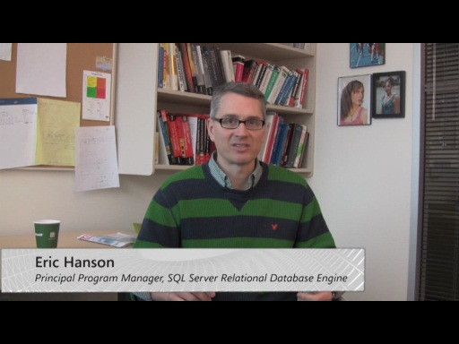
SQLServerColumnStoreIndex [0:04:26] [2011/04/29]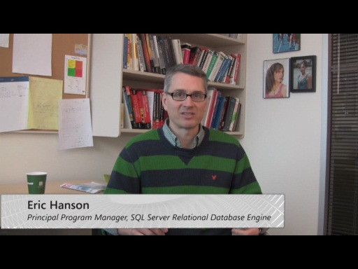 Watch this video from SQL Server Principal Program Manager in query processing team, Eric Hanson, on Column Index in upcoming SQL Server "Denali"
SQLServerFileTable [0:09:59] [2011/04/29]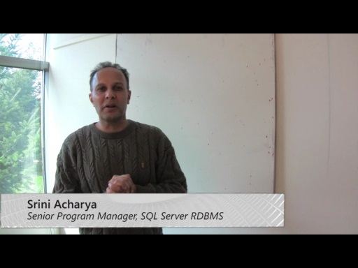 Watch this video from Senior Program Manager of SQL Server RDBMS team, Srini Acharya, about upcoming SQL Server "Denali" feature called FileTable.
Upgrade Your Database [0:07:47] [2011/03/04]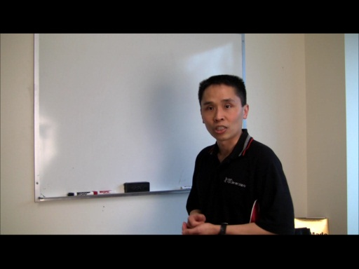 Learn improvements/enhancements on upgrade experience for SQL Server from Joe Yong, Senior Program Manager from SQL Server China Research & Development Manageability team.
SQL Server Data Programmability Tools [0:05:09] [2011/03/04]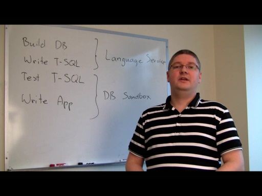 Learn about the vision of database programmability tools for SQL Server "Denali" from Krzysztof Kozielczyk, Program Manager from SQL Server Programmability team.
SQL Server Appliance [0:02:13] [2011/03/04]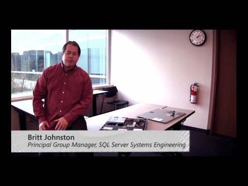 Learn the upcoming SQL Server appliances from Britt Johnston, Principal Group Manager from SQL Server Appliance Engineering team.
Parallel Data Warehouse [0:07:40] [2011/03/04]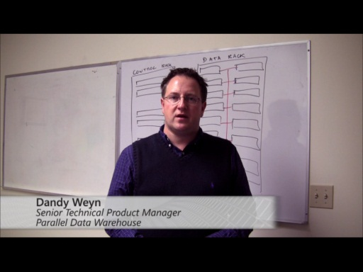 Learn massive parallel architecture of SQL Server Parallel Data Warehouse from Dandy Weyn, Senior Technical Product Manager from SQL Server marketing team.
SQL Server Virtualization [0:10:27] [2011/03/04]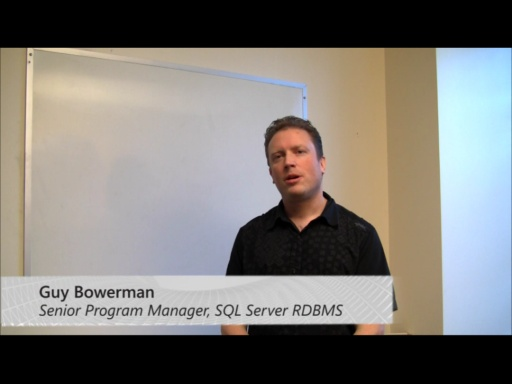 Learn how decisions were made for SQL Server virtualization from Guy Bowerman, Senior Program Manager from SQL Server Engine team.
SQL Server Security [0:07:31] [2011/03/04]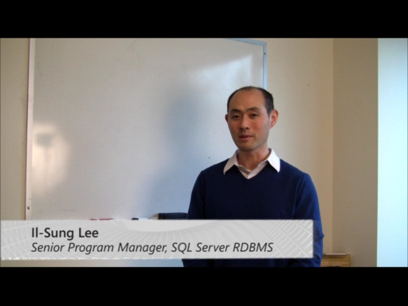 Learn security & compliance features for SQL Server from Il-Sung Lee, Senior Program Manager from SQL Server Engine Security team.
SQL Server AlwaysOn [0:11:00] [2011/03/04]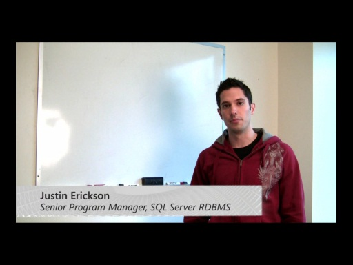 Learn about AlwaysOn - HA/DR improvements/enhancements for SQL Server from Justin Erickson, Senior Program Manager from SQL Server Engine team.
SQL Server Backup Compression [0:05:20] [2011/03/04]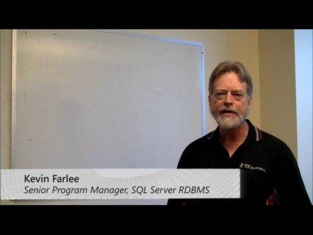 Learn about the choices made for SQL Server backup compression from Kevin Farlee, Senior Program Manager from SQL Server Storage Engine team.
SQL Server Integration Services [0:06:41] [2011/03/04]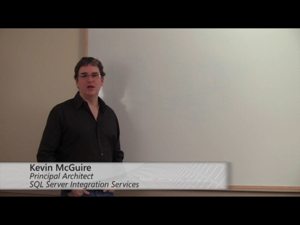 Learn improvements/enhancements on SQL Server "Denali" Integration Services from Kevin McGuire, Principal Architect from SQL Server Integration Services team.
SQL Server Non Relational [0:11:40] [2011/03/04]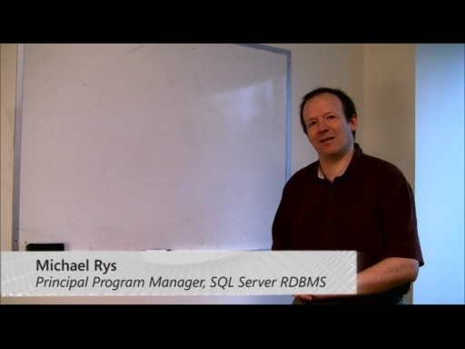 Learn improvements/enhancements on SQL Server non-relational features from Michael Rys, Principal Program Manager from SQL Server Engine team.
SQL Server CLR [0:06:40] [2011/03/04]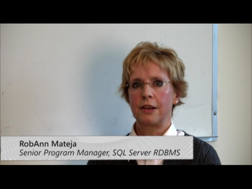 Learn improvements/enhancements on CLR for SQL Server from RobAnn Mateja, Senior Program Manager from SQL Server Engine team.
SQL Server Data Compression [0:06:48] [2011/03/04]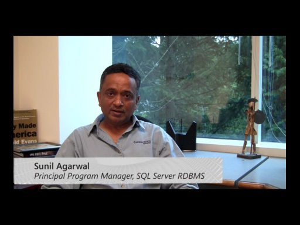 Learn data compression for SQL Server from Sunil Agarwal, Principal Program Manager from SQL Server Engine Storage team.
SQL Server Manageability [0:05:23] [2011/03/04]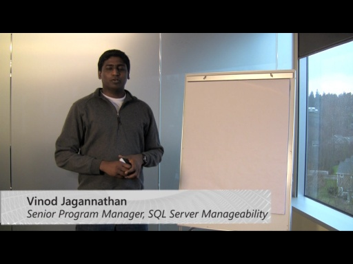 Learn manageability vision for SQL Server from Vinod Jagannathan, Senior Program Manager from SQL Server Manageability team.